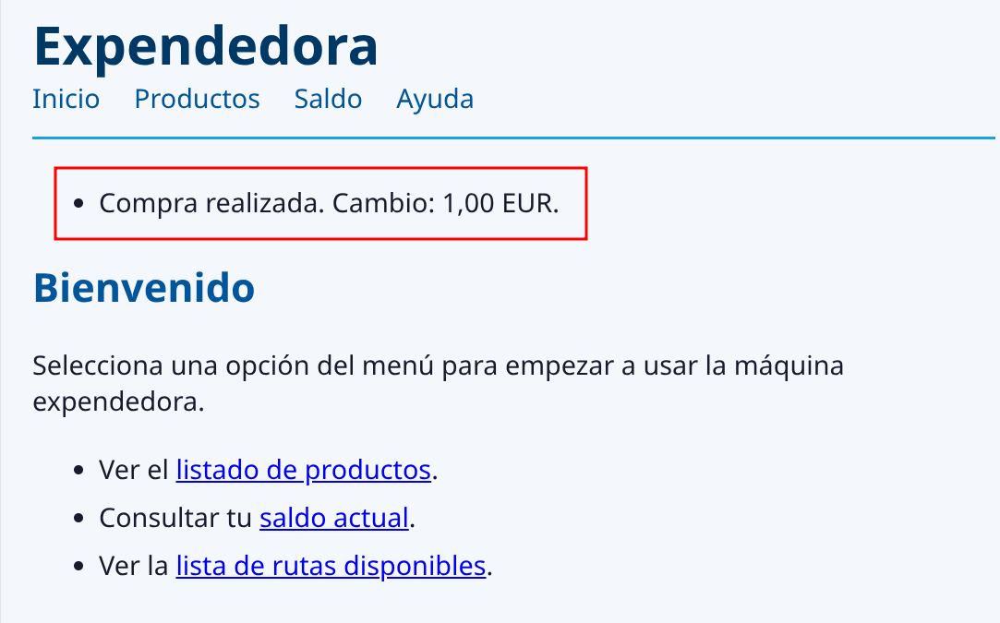
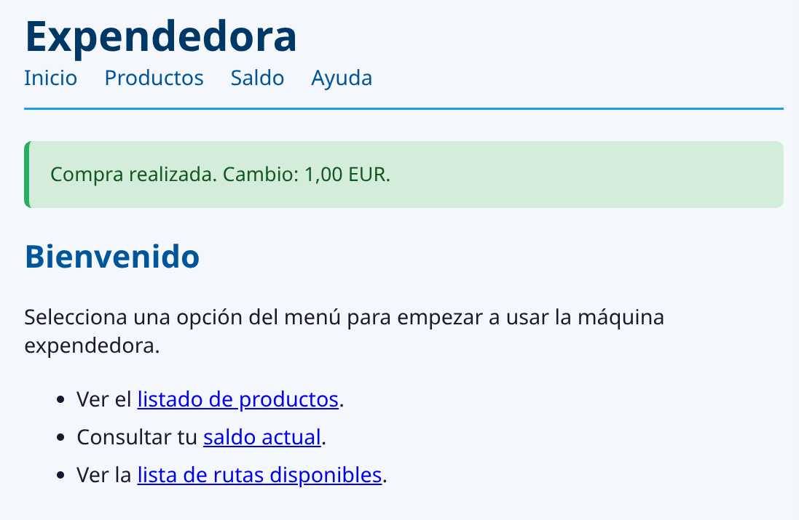
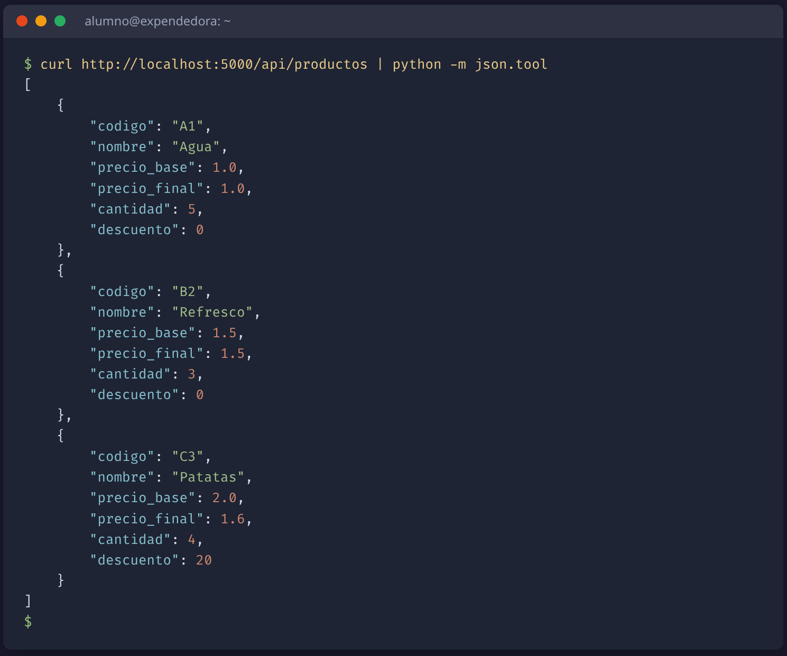
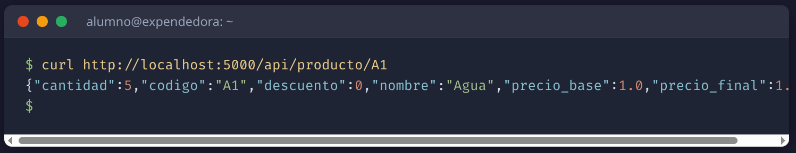

INTEGRACIÓN: MENSAJES FLASH Y API REST¶
Estas notas cubren dos piezas con las que se cierra la integración funcional de una app Flask: los mensajes flash, que permiten dar feedback al usuario tras una redirección, y la API REST mínima, que expone el mismo dominio en JSON sin reescribir nada por debajo.
Conceptos previos trabajados:
- Una app Flask se construye con
app = Flask(__name__)y registra rutas con decoradores@app.route('/url'). Cada decorador asocia una URL a una función que devuelve la respuesta. - El patrón Post/Redirect/Get (PRG): tras un POST con éxito, en lugar de devolver HTML directamente, se devuelve un
redirect(url_for('ruta'))que provoca un GET a una URL distinta. Recargar esa URL final no reejecuta la operación. Es la forma estándar de evitar que pulsar F5 tras una operación en la que se cambia el estado del servidor se vuelva a ejecutar y deje el servidor en estado inconsistente. - Cuando se sigue PRG, el dato que produce el POST (el cambio devuelto por una compra, el id del recurso recién creado…) no llega al GET que ve el usuario, porque son dos peticiones distintas. Es el problema que vienen a resolver los mensajes flash.
Mensajes flash¶
Qué problema resuelven¶
Cuando aplicas PRG a una acción que produce un dato útil para el usuario, ese dato se pierde entre dos peticiones: el route que procesa el POST conoce el resultado, pero la respuesta que ve el usuario la genera otro route distinto tras el redirect.
Ejemplo concreto: una operación de compra que devuelve la vuelta del dinero (el cambio sobrante). El route del POST tiene el cambio en una variable local; el route al que redirige —pongamos la página de inicio— no lo conoce. Necesitamos un canal que sobreviva al redirect y permita al primer route dejarle un mensaje al segundo.
Qué es un mensaje flash¶
Un mensaje flash es una cadena de texto que un route guarda y otro route distinto lee, una sola vez, en la siguiente petición del mismo navegador.
| Característica | Comportamiento |
|---|---|
| Ámbito | Por navegador (cookie de sesión). Otro usuario no los ve. |
| Persistencia | De un solo uso. Se vacían al leerlos. |
| Tamaño | Pequeño (van en una cookie HTTP). No metas párrafos largos. |
| Tipado | Texto + una categoría libre ('exito', 'info', 'error', o lo que decidas tú). |
Los flash no son persistencia de datos. No los uses para guardar estado del dominio: para eso está la base de datos. Son un canal de comunicación efímero entre dos peticiones consecutivas del mismo navegador.
La cookie de sesión y app.secret_key¶
Qué es una cookie
Una cookie es un pequeño fragmento de datos que el servidor le envía al navegador la primera vez que se comunica con él, el navegador lo guarda asociado a ese dominio, y se lo devuelve al servidor en cada petición posterior. Sirve para que el servidor pueda recordar algo entre peticiones distintas del cliente sin pedírselo otra vez al usuario: tu idioma preferido, el contenido del carrito, si ya estás logueado, o —como en estos apuntes— los mensajes flash pendientes de leer. La cookie tiene un tamaño máximo pequeño (unos pocos KB) y vive en el navegador del cliente, no en el servidor.
La cookie de sesión es la cookie concreta que Flask usa para guardar información de la sesión actual del usuario, incluidos los mensajes flash pendientes de leer. Flask firma esa cookie con una clave secreta que tú declaras al crear la app. La declaración va en el módulo donde creas la instancia Flask (típicamente app.py, el fichero que arranca el servidor), justo después de app = Flask(__name__):
La firma garantiza que el contenido de la cookie no se ha manipulado desde el navegador: si alguien edita la cookie a mano para inyectar un mensaje falso, la firma deja de cuadrar y Flask la rechaza.
Firma ≠ cifrado
Firmada no significa cifrada: el contenido viaja en claro y cualquiera con acceso al navegador (o las herramientas de desarrollador) puede leerlo. Lo que la firma impide es que el navegador lo modifique sin que Flask se entere. No metas datos sensibles en flash ni en session: contraseñas, tokens privados, datos personales — nada de eso.
Sin secret_key, llamar a flash(...) lanza RuntimeError: The session is unavailable because no secret key was set: la sesión no funciona porque no hay con qué firmarla.
Mala práctica: dejar la clave secreta escrita en el código en producción
## Incorrecto: si el repositorio es público, cualquiera puede falsificar sesiones
app.secret_key = 'cambiar-esto-en-produccion'
El literal en código solo vale para desarrollo local, donde la clave nunca sale de tu máquina. En producción la clave se carga desde una variable de entorno o un fichero .env que va al .gitignore. La gestión de secretos en producción la verás en detalle en el módulo de despliegue; aquí basta con saber que el literal es solo para desarrollo.
Guardar mensajes flash en el route¶
En el route que procesa la acción, llama a flash(...) antes del redirect:
Fíjate en el patrón canónico de coma decimal española: el importe se extrae a una variable y se embebe en la frase. No aplicar .replace(".", ",") al string completo, porque convertiría también el punto final de la frase en coma.
Leer mensajes flash en la plantilla¶
Los mensajes se leen con get_flashed_messages(with_categories=true) desde la plantilla. Lo natural es ponerlo en la plantilla base de la que heredan todas las páginas, para que aparezcan en cualquier destino del redirect:
{% with %} en Jinja2
{% with nombre = expresión %}…{% endwith %} crea una variable local del bloque: solo existe entre las dos etiquetas, y sirve para no repetir la misma expresión varias veces. Aquí guardamos en mensajes el resultado de get_flashed_messages(with_categories=true) para usarlo en el {% if %} y en el {% for %} sin tener que volver a invocar la función. Es una de las pocas etiquetas de Jinja2 que no aparecen en plantillas simples: las habituales son {% for %}, {% if %}, {% block %} y {% extends %}.
No confundir con el with de Python. Aunque la palabra clave es la misma, son mecanismos distintos: el with de Python gestiona recursos (abre y cierra ficheros, conexiones, locks…) mediante el protocolo de context manager (__enter__/__exit__). El {% with %} de Jinja2 solo limita el ámbito de una variable local; no libera nada al cerrarse.
El parámetro with_categories=true cambia lo que devuelve la función:
get_flashed_messages()→ lista de cadenas:["Compra realizada...", "Sesión cerrada"].get_flashed_messages(with_categories=true)→ lista de pares(categoría, mensaje):[("exito", "Compra realizada..."), ("info", "Sesión cerrada")].
Por eso desempaquetamos for categoria, msg in mensajes: porque pedimos las categorías, los elementos son pares.

Ojo al orden: flash guarda (mensaje, categoría), get_flashed_messages devuelve (categoría, mensaje)
Las dos funciones tratan el par en orden inverso:
Es un detalle de la API de Flask, no una errata. Si por costumbre lees el par como "primero el mensaje, después la categoría" en la plantilla, terminarás mostrando el texto del mensaje como clase CSS y el nombre de la categoría como contenido de la lista.
Categorías y estilos¶
La categoría es una etiqueta tuya, libre: 'exito', 'info', 'error', 'success' en inglés, o cualquier otra que decidas. Flask no la interpreta: simplemente la guarda y la devuelve. En la plantilla la usamos como sufijo de la clase CSS (flash-exito, flash-info, flash-error), de modo que cada categoría se vea distinta.
Para que esa diferenciación visual se note, tú defines las reglas CSS en tu hoja de estilos:
.flash-exito { background: #d4edda; color: #155724; }
.flash-info { background: #d1ecf1; color: #0c5460; }
.flash-error { background: #f8d7da; color: #721c24; }
Si no defines estilos, los mensajes aparecerán igual sin importar la categoría — funciona, pero pierde la referencia visual.
Ejemplo con estilo de categoría "exito"

Ejemplo con estilo de categoría "error"

El bloque va en la plantilla base, no en una página concreta
Si pones el bloque flash solo en una plantilla concreta (digamos la del inicio), los mensajes que aparezcan tras un redirect a cualquier otra página no se verán. Colócalo en la plantilla base, dentro de <main> y antes del {% block contenido %}, para que cualquier página que herede del layout los muestre.
API REST mínima en Flask¶
De HTML a JSON: el mismo dominio, otro canal¶
La idea central de la arquitectura por capas en una app web es que la capa de aplicación (los servicios) y la de dominio (los modelos) no saben quién las llama. Si eso es cierto, debería ser posible añadir una segunda interfaz que hable un formato distinto —no HTML— sin tocar nada por debajo de la capa de presentación. Una API REST que devuelve datos en JSON es exactamente esa segunda interfaz.
Qué es JSON¶
JSON (JavaScript Object Notation) es un formato de texto para intercambiar datos estructurados entre programas. Su gracia: una lista de Python se serializa a un array JSON, un diccionario a un objeto JSON, y los tipos básicos (str, int, float, bool, None) tienen equivalente directo. Cualquier lenguaje moderno trae un parser JSON en su librería estándar.
[
{"codigo": "A1", "nombre": "Agua", "precio_final": 1.0, "cantidad": 5},
{"codigo": "B2", "nombre": "Refresco", "precio_final": 1.5, "cantidad": 3}
]
JSON es datos, no presentación. No tiene estilos, ni botones, ni enlaces. Quien lo recibe decide qué hacer con él: pintarlo en una tabla HTML, consumirlo desde una app móvil que lo represente con sus propios componentes nativos, guardarlo en un fichero, mostrarlo por terminal, o ignorarlo.
jsonify¶
jsonify es la función de Flask que convierte un diccionario o lista de Python en una respuesta HTTP con cabecera Content-Type: application/json y el cuerpo serializado a JSON.
| Aspecto | jsonify(...) |
json.dumps(...) |
|---|---|---|
| Devuelve | Objeto Response de Flask |
Cadena de texto |
Cabecera Content-Type |
application/json |
— (la pondrías tú) |
Listo para return en route |
Sí | No (Flask lo trataría como HTML) |
Usa siempre jsonify en routes Flask
json.dumps está pensado para serializar a un fichero o a una variable. jsonify está pensado para responder a una petición HTTP. La diferencia que más nota el cliente es la cabecera: con jsonify, herramientas como curl, navegadores y librerías cliente reconocen la respuesta como JSON y la muestran/parsean en consecuencia.
Serialización: lo que jsonify espera recibir¶
jsonify serializa de forma directa los tipos JSON-nativos de Python (str, int, float, bool, None, list, dict), pero no sabe qué hacer con instancias de tus clases. Si tu servicio devuelve objetos del dominio, jsonify(producto) lanzará TypeError: Object of type Producto is not JSON serializable. Hay dos patrones habituales para convertir antes de pasar a jsonify, según lo que devuelva tu servicio:
Si devuelve tuplas posicionales, conviértelas a dict con dict(zip(keys, tupla)):
Aquí combinamos tres ideas de Python: una comprensión de lista ([expr for t in iterable]) que aplica la conversión a cada elemento, zip(keys, t) que empareja claves y valores por posición, y dict(...) que construye el diccionario a partir de esos pares. Este patrón existe porque el servicio devuelve datos compactos (tuplas) pero los consumidores —plantillas HTML, clientes JSON— prefieren nombres explícitos.
Si devuelve instancias de clases, añade un método to_dict() en la clase y úsalo:
Dos caminos distintos —
dict(zip(...)),to_dict()— para una misma necesidad: que lo que llega ajsonifysea ya undict(o una lista dedict).
Routes API: misma capa de aplicación, distinta presentación¶
Compara un route que devuelve HTML con su gemelo API que devuelve JSON. Sirviendo la misma lista de productos:
Las dos primeras líneas que hacen la llamada al dominio son idénticas. La diferencia vive en la última línea: una renderiza HTML, la otra serializa JSON. El servicio no sabe —ni le importa— a cuál de los dos sirve en cada momento. Esta es la respuesta que el cliente recibe al pedir /api/productos (formateada con python -m json.tool para legibilidad):

El convenio de nombrar las rutas API con el prefijo
/api/no es obligatorio, pero es estándar de facto: separa visualmente las rutas pensadas para humanos de las pensadas para máquinas. En proyectos grandes los routes API se agrupan en un fichero aparte usando un mecanismo llamado blueprint que Flask trae de serie; en proyectos pequeños como el nuestro, dejarlos en el mismo fichero que las rutas HTML es perfectamente legítimo.
Errores en JSON¶
Cuando un route HTML captura una excepción de dominio, devuelve HTML con código de error. El equivalente JSON devuelve un objeto JSON con la clave error y el mismo código HTTP:
El código HTTP sigue siendo el mismo que en HTML (404 para no encontrado, 409 para conflicto, 400 para entrada inválida). Solo cambia el cuerpo: en vez de una página HTML con el mensaje, un JSON con la clave
error. El cliente decide qué hacer con ese mensaje según su naturaleza —mostrarlo en pantalla, registrarlo en un log, reintentar…
Con curl -i se ven a la vez el código de estado, las cabeceras (Content-Type: application/json confirma que la respuesta es JSON, no una página HTML de error) y el cuerpo del JSON:

Cuándo HTML, cuándo JSON¶
| Canal | Para quién | Ejemplo |
|---|---|---|
| HTML | Humanos con navegador | /productos muestra una tabla con enlaces. |
| JSON | Programas (scripts, apps móviles, frontends SPA, otros servicios) | /api/productos devuelve datos parseables. |
La pregunta no es "¿cuál es mejor?" sino "¿quién es el cliente?". Una app web tradicional sirve HTML porque su cliente es un navegador. Una app móvil consume JSON porque internamente lo pinta con sus propios componentes. Un script de monitorización pide JSON porque solo quiere los datos. La misma capa de aplicación puede alimentar a los tres a la vez.
Probar la API con curl
No necesitas un cliente especial para probar una API JSON: curl llega:
curl http://localhost:5000/api/productos
curl http://localhost:5000/api/producto/A1
curl -i http://localhost:5000/api/producto/ZZ ## -i muestra cabeceras + código
curl http://localhost:5000/api/productos | python -m json.tool ## formateado
Si arrancas el servidor en una terminal y lanzas estos comandos en otra, ves la API funcionando sin abrir el navegador. python -m json.tool toma JSON por entrada estándar y lo imprime indentado, útil para inspeccionar respuestas largas.
Sin json.tool, la respuesta sale en una sola línea —válida igualmente, pero menos legible para inspección manual:

Qué cierra esta fase¶
Con los mensajes flash queda cerrado el patrón Post/Redirect/Get: una acción de escritura ahora puede redirigir a una URL segura y mostrar feedback al usuario como mensaje efímero en la siguiente página, sin tocar el dominio ni la persistencia. Con la API REST mínima queda demostrado en código que la capa de presentación es realmente intercambiable: el mismo método del servicio alimenta dos canales distintos (HTML para humanos, JSON para máquinas) sin que el dominio se entere.
En la unidad quedan dos fases más:
- Autenticación y autorización. Hasta ahora cualquiera con acceso a la URL puede dar de alta, eliminar o reponer recursos. Añadir login + un decorador
@login_requiredprotegerá las rutas de escritura. Es el último cambio funcional de la app web. - Auditoría arquitectónica. Recorrer el proyecto fichero a fichero, comparar el estado al iniciar la unidad con el estado final, y comprobar capa por capa si la promesa de la arquitectura por capas se ha cumplido. Es el cierre real de la unidad: deja constancia escrita del veredicto.